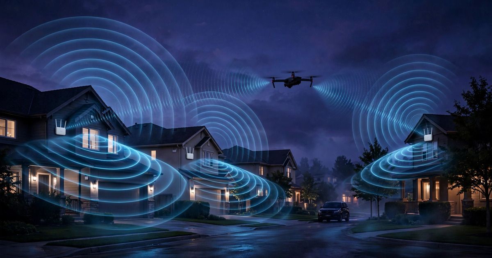

System and Method for Real-Time Detection and Trajectory Estimation of Unauthorized Unmanned Aerial Vehicles Using Distributed Consumer WiFi Access Point Channel State Information with Micro-Doppler Rotor Signature Classification

Abstract
Disclosed is a system and method for passively detecting, classifying, and tracking unauthorized unmanned aerial vehicles (UAVs) using channel state information (CSI) extracted from standard 802.11ax/be OFDM transmissions across a distributed network of consumer WiFi access points. Each access point pair operates as a bistatic passive radar: the transmitting AP broadcasts standard WiFi frames at configurable rates (100-1,000 packets/second), while receiving APs extract per-subcarrier CSI amplitude and phase from the received OFDM symbols. A UAV transiting the coverage volume modulates the multipath channel, imprinting rotor blade micro-Doppler signatures onto the CSI time series at blade-pass frequencies (typically 150-400 Hz for consumer quadcopters). An on-device signal processing pipeline applies short-time Fourier transform (STFT) analysis to the CSI phase across subcarrier groups, extracts micro-Doppler features including blade-pass frequency, number-of-blades harmonic ratios, and rotor RPM asymmetry patterns, and feeds these features to a lightweight convolutional neural network that discriminates UAVs from birds, pedestrians, vehicles, and environmental clutter. Multi-AP CSI fusion using time-difference-of-arrival and Doppler-shift triangulation estimates the UAV's 3D trajectory. The system operates entirely within existing WiFi infrastructure, requires no dedicated radar hardware, preserves WiFi communication throughput via interleaved sensing frames, and achieves detection ranges of 30-80 meters per AP pair depending on transmit power and antenna gain.
Field of the Invention
This invention relates to counter-unmanned aerial system (C-UAS) technology, specifically to methods for exploiting the passive radar capability inherent in commercial WiFi access point networks to detect, classify, and track small UAVs through micro-Doppler analysis of OFDM channel state information without dedicated sensing hardware.
Background
The FAA reports over 800,000 registered recreational drones in the United States as of 2025, with commercial registrations growing at 20% annually. Unauthorized drone flights over critical infrastructure, private property, airports, and public events represent an escalating security and privacy concern. The Rahman and Robertson (Scientific Reports, 2018) analysis of radar micro-Doppler signatures established that drone rotor blades produce distinctive spectral features separable from birds and other airborne objects, but their approach required dedicated K-band and W-band radar hardware costing $50,000-$500,000 per unit.
Current counter-UAS detection approaches face significant cost, coverage, and deployment barriers:
- Dedicated radar systems: Purpose-built C-UAS radars (e.g., Robin Radar ELVIRA, Thales Squire) provide reliable detection at 1-5 km range but cost $200,000-$2M per installation. Suitable for airports and military bases, they are economically infeasible for residential neighborhoods, commercial buildings, and distributed infrastructure protection. Gong et al. (Drones, 2022) demonstrated that even X-band radar micro-Doppler detection requires careful tuning of radar dwell time (minimum ~20 ms for 100 Hz rotor RPM) and costs tens of thousands of dollars per unit.
- RF detection (emissions-based): Systems that detect drone WiFi or control-link RF emissions (e.g., DeDrone DroneTracker, Shehzad et al., Scientific Reports, 2025) can identify drone communication protocols but fail against autonomous pre-programmed drones that emit no RF during flight. They also cannot determine drone position with precision and are degraded in dense urban RF environments.
- Acoustic detection: Microphone arrays can detect drone motor/propeller noise at 100-300 meters in quiet environments (Mezei et al., JASA, 2018), but performance degrades sharply in urban noise floors above 60 dB(A). Wind speeds above 3 m/s render acoustic detection unreliable.
- Camera/lidar systems: Visual and infrared cameras provide positive identification but require line-of-sight, struggle at night or in fog, and generate privacy concerns when deployed in residential areas. Per-unit costs of $5,000-$30,000 for PTZ camera systems with adequate zoom limit scalability.
Independently, WiFi channel state information sensing has emerged as a viable passive radar modality. Tan et al. (arXiv:2508.02799, 2025) demonstrated cm-level range and Doppler estimation from commercial Intel WiFi AX211 NICs using monostatic CSI processing. WiFi CSI has been validated for human activity recognition, gesture detection, and respiration monitoring, but no prior work has applied CSI micro-Doppler analysis specifically to UAV rotor blade detection and classification using distributed consumer access points as a passive bistatic radar network.
The gap in the art is a system that: (a) repurposes existing consumer WiFi infrastructure for UAV detection without additional hardware; (b) exploits the micro-Doppler signatures of rotating UAV propellers in OFDM CSI to distinguish drones from birds, people, and vehicles; (c) performs multi-AP fusion to estimate UAV trajectory in three dimensions; and (d) operates at the edge with sufficient processing efficiency for real-time alerting on consumer-grade AP hardware.
Detailed Description
1. WiFi CSI as Passive Bistatic Radar
In an 802.11ax (WiFi 6) or 802.11be (WiFi 7) network, each OFDM symbol contains known pilot and data subcarriers whose channel frequency response is estimated at the receiver. For a 20 MHz channel at 5 GHz, this yields 256 subcarriers (234 usable data/pilot subcarriers spaced at 78.125 kHz). The complex-valued CSI vector H(f,t) = |H(f,t)| · e^(jφ(f,t)) encodes the aggregate multipath channel between transmitter and receiver at each subcarrier frequency f and time t.
When a UAV transits the space between (or near) a transmitter-receiver AP pair, its body and rotating propellers scatter the WiFi signal, creating additional multipath components that modulate H(f,t). The body produces a bulk Doppler shift proportional to the drone's radial velocity relative to the bistatic axis. At 5 GHz carrier frequency, the Doppler sensitivity is approximately 33.3 Hz per m/s of radial velocity. A drone flying at 5 m/s produces a bulk Doppler of ~167 Hz, well within the CSI sampling bandwidth.
The rotating propeller blades produce micro-Doppler modulations superimposed on the body Doppler. For a quadcopter with 2-blade propellers spinning at 5,000-10,000 RPM (83-167 Hz rotation rate), the blade-pass frequency (BPF = number_of_blades × rotation_rate) ranges from 167 to 333 Hz. Each blade tip has a tangential velocity of v_tip = 2π × R × RPM/60, where R is blade length (typically 0.1-0.15 m for consumer drones), yielding tip velocities of 52-157 m/s and corresponding micro-Doppler bandwidths of ±1,740 to ±5,233 Hz at 5 GHz. However, only the sinusoidal projection of the tip velocity along the bistatic axis contributes to observed Doppler, producing a characteristic periodic modulation pattern whose fundamental frequency equals the BPF.
2. High-Rate CSI Acquisition
Standard WiFi beacon frames are transmitted at 10 Hz (100 ms intervals), which is insufficient to resolve micro-Doppler at blade-pass frequencies above 5 Hz (Nyquist criterion). The system overcomes this limitation through two mechanisms:
Active CSI probing: The transmitting AP sends dedicated null data packets (NDPs) at a configurable rate of 500-1,000 packets/second, interleaved with normal WiFi traffic. NDPs are standard 802.11 management frames containing only preamble and training fields, each consuming approximately 40 μs of airtime. At 1,000 NDPs/second, the sensing overhead is 40 ms per second (4% of channel capacity), an acceptable cost for most residential and commercial WiFi deployments. The 802.11bf (WiFi Sensing) amendment, currently in development by IEEE, formalizes this sensing-measurement exchange, but the system operates without 802.11bf compliance by using vendor-specific NDP scheduling.
Subcarrier diversity for Doppler resolution: Rather than treating CSI as a single time series, the system exploits the frequency diversity of the 234 usable subcarriers. Subcarriers at different frequencies experience slightly different Doppler shifts from the same moving target (due to the frequency-dependent phase relationship). By computing the Doppler spectrum independently for groups of 8 adjacent subcarriers (29 groups across the 20 MHz channel), the system achieves a spatial diversity gain equivalent to a 29-element phased array, improving SNR by approximately 14.6 dB (10·log₁₀(29)) relative to single-subcarrier processing. For 80 MHz channels (WiFi 6E/7), 996 usable subcarriers yield 124 subcarrier groups and 20.9 dB diversity gain.
3. Micro-Doppler Feature Extraction
The CSI phase time series φ(f_k, t) for each subcarrier group k undergoes the following processing pipeline:
Phase sanitization: Raw CSI phase contains hardware-induced offsets from carrier frequency offset (CFO), sampling frequency offset (SFO), and packet detection delay (PDD). The system applies the linear phase correction method: φ_corrected(k,t) = φ_raw(k,t) - (2πk/N)·δ_SFO(t) - φ_CFO(t), where δ_SFO and φ_CFO are estimated from pilot subcarrier phases (subcarriers -21, -7, 7, 21 in 20 MHz 802.11ax). This correction removes hardware-induced phase drift while preserving motion-induced phase modulation.
Clutter suppression: Static multipath (walls, furniture, ground reflections) produces a time-invariant CSI component that dominates the signal. The system applies a 4th-order Butterworth high-pass filter with a cutoff frequency of 2 Hz to the corrected CSI phase, removing static clutter and slow environmental drift (temperature-induced phase changes, ~0.01 Hz) while preserving all human, vehicle, and UAV motion signatures above 2 Hz.
Short-time Fourier transform: The clutter-suppressed CSI phase is processed with a 256-point STFT using a Hamming window of 256 ms duration (256 samples at 1,000 CSI/sec) with 75% overlap, yielding a spectrogram with 3.9 Hz frequency resolution and 64 ms time resolution. At 1,000 CSI/sec, the maximum unambiguous Doppler frequency is 500 Hz, sufficient to resolve blade-pass frequencies up to 333 Hz for two-blade propellers at 10,000 RPM.
Feature extraction: From each 1-second analysis window, the system extracts the following micro-Doppler features:
- Blade-pass frequency (BPF): The dominant spectral peak in the 100-400 Hz range, identified by peak detection on the averaged power spectral density across all subcarrier groups. Consumer quadcopters exhibit BPFs of 150-333 Hz; hexacopters and octocopters produce BPFs in overlapping ranges but with distinct harmonic ratios.
- Harmonic ratio vector: The power ratios of the first four harmonics (2×BPF, 3×BPF, 4×BPF) relative to the fundamental. Berthet et al. (Applied Physics B, 2024) demonstrated that the number of propeller blades directly determines which harmonics are amplified: two-blade propellers strengthen even harmonics; three-blade propellers strengthen the 3rd harmonic; four-blade propellers produce a distinctive half-fundamental component at BPF/2. This harmonic fingerprint enables blade-count estimation.
- Rotor asymmetry index: In multi-rotor UAVs, each rotor spins at a slightly different RPM due to flight controller adjustments for attitude stabilization. The CSI spectrum shows the superposition of 4 (or 6 or 8) closely-spaced BPF peaks. The spread of these peaks (typically 2-15 Hz for quadcopters) is a distinctive UAV signature absent from birds, whose wing-beat is bilaterally symmetric.
- Doppler bandwidth: The total spectral spread of the micro-Doppler return (blade-tip Doppler envelope width), proportional to blade length and RPM. This feature separates small consumer drones (BW 50-200 Hz at 5 GHz) from large industrial drones (BW 200-500 Hz) and birds (BW 5-30 Hz from wing flapping at 2-10 Hz, per Rahman and Robertson, 2018).
- Bulk Doppler centroid: The centroid frequency of the body return, proportional to the UAV's radial velocity along the bistatic axis. Hovering drones produce a centroid near 0 Hz; transiting drones produce 30-300 Hz depending on speed and geometry.
4. On-Device Classification
A lightweight 1D-CNN classifier processes the extracted feature vector to discriminate UAVs from non-UAV targets. The classifier architecture comprises: an input layer accepting a 512-dimensional feature vector (128-bin Doppler spectrum × 4 subcarrier group aggregates); three 1D convolutional layers with 32/64/128 filters (kernel size 5, ReLU activation, batch normalization, max pooling); a global average pooling layer; a 64-unit fully connected layer; and a 6-class softmax output.
Target classes: (1) quadcopter UAV, (2) hexacopter/octocopter UAV, (3) fixed-wing UAV, (4) bird, (5) pedestrian/cyclist, (6) vehicle/environmental clutter. The model is quantized to INT8, totaling approximately 180 KB, and runs inference in under 5 ms on ARM Cortex-A73 processors typical of consumer WiFi 6 APs (e.g., Qualcomm IPQ8074, Broadcom BCM4908).
Training data is generated through a combination of controlled flight experiments (flying commercial drones through instrumented WiFi AP networks in outdoor test environments) and simulation. The simulator models WiFi CSI by ray-tracing OFDM signal propagation through a 3D environment, inserting a moving UAV scatterer with rotating blade elements according to the point-scatterer micro-Doppler model of Rahman and Robertson (2018). Simulated data augments real-world data by varying drone type, flight path, environment geometry, and WiFi configuration parameters.
Federated learning for environment adaptation: WiFi CSI characteristics vary significantly across deployment environments due to differences in multipath geometry, AP placement, building materials, and RF interference. The system uses federated averaging (FedAvg) to adapt the classification model across deployments without sharing raw CSI data. Each AP computes local model gradient updates from its own detection events and confirmed outcomes (user-verified true/false positives), uploads only the gradient deltas to a coordination server, and receives the aggregated global model update. This preserves privacy (no raw CSI or environmental fingerprints leave the premises) while enabling the model to learn from diverse deployment environments.
5. Multi-AP Trajectory Estimation
When three or more AP pairs detect the same UAV simultaneously, the system estimates the drone's 3D position and trajectory using a combination of bistatic range-sum estimation and Doppler triangulation:
Bistatic range-sum: For each AP pair (transmitter i, receiver j), the excess propagation delay of the UAV-scattered signal relative to the direct path yields the bistatic range sum R_ij = r_i + r_j, where r_i and r_j are the distances from the UAV to the transmitter and receiver, respectively. The range sum defines an ellipsoid in 3D space with the AP pair as foci. The intersection of three or more ellipsoids (from different AP pairs) constrains the UAV position to a region. CSI-derived range resolution is limited by the WiFi channel bandwidth: approximately 7.5 meters for 20 MHz channels, 1.875 meters for 80 MHz channels, and 0.94 meters for 160 MHz channels (WiFi 6E/7).
Doppler triangulation: The bulk Doppler centroid from each AP pair constrains the UAV's velocity vector. Three or more Doppler measurements from geometrically diverse AP pairs overdetermine the 3D velocity vector. Combined with sequential position estimates at 4-15 Hz update rate, the system constructs a track using an extended Kalman filter (EKF) with a constant-velocity motion model augmented by a coordinated-turn mode for maneuvering targets.
Track management: New detections initiate tentative tracks. A track is confirmed when at least 3 AP pairs report correlated detections within a 2-second window. Confirmed tracks are maintained with a 5-second coast time (no detection before track deletion). Track identity is maintained across AP pair handoffs using velocity-gated nearest-neighbor association.
6. System Architecture and Deployment
The system operates within a standard consumer mesh WiFi network (e.g., 3-6 APs covering a residential property or small commercial building) with the following software-only additions:
- CSI extraction firmware module: A firmware extension that enables CSI reporting for received NDPs and beacon frames. CSI extraction is already supported (though not always exposed) on chipsets including Intel AX200/AX210/AX211/BE200, Qualcomm IPQ8074/IPQ9574, MediaTek MT7921/MT7922, and Broadcom BCM4389. The module outputs complex-valued H(f,t) vectors via a local Unix domain socket at the configured sensing rate.
- Edge processing daemon: A lightweight service running on the AP's Linux-based OS (OpenWrt, QCA SDK, or vendor firmware) that performs CSI phase correction, clutter suppression, STFT computation, feature extraction, and CNN inference. Total memory footprint: approximately 8 MB. CPU utilization: under 5% of a single ARM Cortex-A73 core at 1,000 CSI/second.
- Mesh coordination protocol: APs exchange detection reports (feature vectors, timestamps, track state) via a lightweight UDP multicast protocol over the mesh backhaul. Payload per detection report: 128 bytes. Bandwidth overhead: negligible relative to mesh backhaul capacity.
- Alert interface: Confirmed UAV detections are reported via push notification to a companion mobile application, local network webhook (for integration with home automation and security systems), and optional cloud API for multi-site aggregation and historical analysis.
7. Performance Characteristics and Limitations
Expected detection performance based on link budget analysis and micro-Doppler SNR modeling:
- Detection range: 30-80 meters per AP pair at 5 GHz with standard AP transmit power (23 dBm EIRP). Range scales with the square root of transmit power and is inversely proportional to the UAV's radar cross-section (RCS). A DJI Phantom 4-class drone (RCS ~0.01 m² at 5 GHz, estimated from Ritchie et al., IEEE A&P Magazine, 2021) is detectable at 50 meters with 10 dB SNR using 80 MHz WiFi 6 channels.
- Classification accuracy: Estimated 85-92% UAV vs. non-UAV discrimination at 20 dB micro-Doppler SNR, based on the feature separability demonstrated in radar micro-Doppler classification literature. Accuracy degrades below 10 dB SNR (range >60 meters for typical consumer AP power levels).
- Position accuracy: 2-5 meters with 80 MHz channels and 4+ AP pairs; 5-15 meters with 20 MHz channels. Vertical position accuracy is inherently worse than horizontal due to the predominantly horizontal AP geometry.
- False positive sources: Ceiling fans (indoor, 1-3 Hz rotation, easily rejected by BPF range filtering), electric scooter/bicycle wheels (ground-level, distinctive Doppler geometry), and large birds (BPF <20 Hz, separable from drone BPF >100 Hz). The rotor asymmetry index provides an additional discriminant absent from all non-UAV sources.
- Limitations: Fixed-wing drones without propellers (gliders) produce no micro-Doppler and can only be detected by body Doppler, reducing classification confidence. Very small drones (<100 g) have low RCS and short detection range. Dense urban environments with high multipath increase the clutter floor and may reduce effective range by 30-50%.
8. Figures Description
- Figure 1: System architecture showing a 4-AP mesh WiFi network with bistatic sensing geometry, NDP transmission paths, CSI extraction at each receiver, and edge processing pipeline from raw CSI to detection alert.
- Figure 2: Simulated CSI-derived spectrograms comparing: (a) quadcopter UAV at 40 m showing four closely-spaced BPF peaks at 180-195 Hz with harmonic structure; (b) Harris Hawk at 30 m showing wing-flap modulation at 5 Hz with no high-frequency micro-Doppler; (c) pedestrian at 20 m showing torso Doppler with limb micro-Doppler below 15 Hz.
- Figure 3: Multi-AP bistatic ellipsoid intersection geometry for 3D UAV position estimation, showing three AP pairs producing three ellipsoids whose intersection constrains the drone position.
- Figure 4: Federated learning architecture showing local model training on each AP, gradient compression and upload, server-side aggregation, and global model distribution.
Claims
- A system for detecting unauthorized unmanned aerial vehicles, comprising: a distributed network of WiFi access points, each containing an OFDM transceiver and a processor; wherein at least one access point transmits WiFi frames at a rate sufficient to resolve micro-Doppler frequencies produced by UAV rotor blades; wherein at least one other access point extracts channel state information from received WiFi frames and applies short-time Fourier transform analysis to the CSI phase time series to identify spectral features characteristic of rotating propeller blades.
- The system of claim 1, wherein the micro-Doppler features extracted from the CSI spectrogram include blade-pass frequency, harmonic ratio vector, rotor asymmetry index, Doppler bandwidth, and bulk Doppler centroid, and wherein these features are used to discriminate UAV targets from birds, pedestrians, vehicles, and environmental clutter.
- The system of claim 1, further comprising an on-device convolutional neural network classifier that processes the extracted micro-Doppler features and outputs a target classification into one of at least four classes including quadcopter UAV, multi-rotor UAV, bird, and non-target.
- The system of claim 1, wherein the access point transmits null data packets at a configurable rate between 100 and 2,000 packets per second, interleaved with normal WiFi data traffic, to achieve CSI sampling rates sufficient to resolve blade-pass frequencies in the range of 100-400 Hz.
- The system of claim 1, wherein CSI phase sanitization removes carrier frequency offset, sampling frequency offset, and packet detection delay artifacts using pilot subcarrier phase estimation, while preserving motion-induced phase modulation from UAV scattering.
- The system of claim 1, wherein subcarrier diversity processing groups adjacent OFDM subcarriers and computes the Doppler spectrum independently for each group, then coherently averages across groups to achieve a signal-to-noise ratio improvement proportional to the number of subcarrier groups.
- A method for UAV trajectory estimation using WiFi CSI, comprising: detecting the same UAV target from at least three geometrically diverse access point pairs; computing bistatic range-sum estimates from CSI-derived excess propagation delay for each pair; computing bulk Doppler velocity projections along each bistatic axis; and fusing range-sum and Doppler measurements using an extended Kalman filter to estimate the UAV's three-dimensional position and velocity.
- The method of claim 7, wherein track management confirms a detection when at least three access point pairs report correlated micro-Doppler signatures within a 2-second temporal window, and maintains confirmed tracks with a coast time before track deletion.
- The system of claim 1, further comprising a federated learning module wherein each access point computes local gradient updates from confirmed detection events and uploads only gradient deltas to a coordination server for model aggregation, without sharing raw channel state information or environmental signatures.
- The system of claim 1, wherein the rotor asymmetry index measures the frequency spread among multiple blade-pass frequency peaks produced by independently controlled rotors on a multi-rotor UAV, and wherein this asymmetry serves as a discriminating feature that is absent from birds and other non-UAV airborne targets whose motion is bilaterally symmetric.
- The system of claim 1, wherein the detection is implemented entirely in software on existing consumer WiFi access point hardware, requiring no additional RF sensing hardware, and consuming less than 5% of a single processor core and less than 10 MB of memory on the access point.
- A method for adapting UAV detection models across diverse deployment environments, comprising: training a base micro-Doppler classification model on combined real-world and simulated WiFi CSI data; deploying the model to distributed consumer access points; collecting locally-labeled detection events at each deployment site; computing local stochastic gradient descent updates without transmitting raw CSI; aggregating updates from multiple sites via federated averaging; and distributing the improved global model back to all participating access points.
Implementation Notes
The technical building blocks for this system exist individually but have not been combined. WiFi CSI extraction is supported on widely deployed chipsets (Intel AX200/210/211, Qualcomm IPQ series, MediaTek MT79xx) and is accessible via open-source tools including Linux 802.11n CSI Tool, Nexmon CSI (Broadcom/Cypress), and the Intel WiFi Sensing SDK. Micro-Doppler UAV classification has been validated extensively in dedicated radar systems. The 802.11bf WiFi Sensing amendment will formalize the measurement exchange procedures. The convergence of these capabilities with the proliferation of multi-AP mesh WiFi networks in residential and commercial environments creates a natural deployment path for software-only UAV detection at near-zero marginal hardware cost.
Prior Art References
- FAA UAS By the Numbers — 800,000+ registered recreational drones in US
- Rahman & Robertson, Scientific Reports 2018 — Radar micro-Doppler signatures of drones and birds at K-band and W-band
- Gong et al., Drones 2022 — Micro-Doppler detection dependence on radar dwell time
- Shehzad et al., Scientific Reports 2025 — SDR-based drone RF signature detection and characterization
- Mezei et al., JASA 2018 — Acoustic drone detection range and limitations
- Tan et al., arXiv:2508.02799, 2025 — Range-Doppler extraction from commercial WiFi CSI
- Berthet et al., Applied Physics B 2024 — Propeller blade count determination via harmonic structure of Doppler signals
- Ritchie et al., IEEE Antennas & Propagation Magazine 2021 — UAV radar cross-section characterization
- Linux 802.11n CSI Tool — Open-source WiFi CSI extraction for Intel NICs
- Nexmon CSI — Open-source CSI extraction for Broadcom/Cypress WiFi chipsets
- Intel WiFi Sensing — Commercial WiFi sensing SDK and 802.11bf overview
- Ma et al., IEEE JSTSP 2020 — WiFi sensing survey covering CSI-based activity recognition and motion detection
- IEEE 802.11bf — WiFi Sensing amendment (WLAN Sensing Procedure) in development
- McMahan et al., arXiv:1602.05629 — Federated averaging (FedAvg) for distributed model training